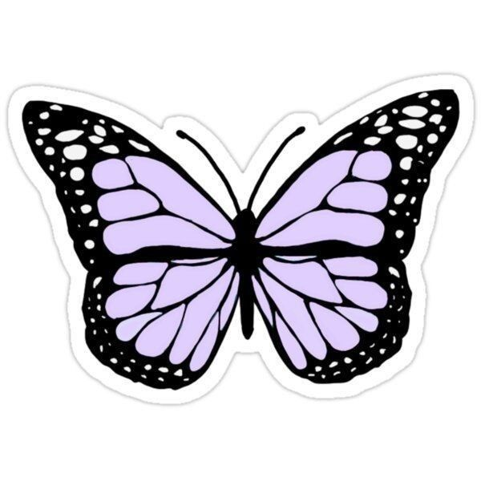

Hey, everyone! I'm Gioia,
an aspiring Web Developer and UX Designer with a passion for crafting digital experiences that resonate with users. Currently, I'm on an exciting journey of self-teaching while diving into the world of technology and design. Balancing this with a full-time role at a software company, I'm constantly immersed in real-world projects that challenge and inspire me.
I'm eager to expand my skills and knowledge, which is why I've embarked on a Bachelor of Science in "UX Design & Digital Solutions." This academic pursuit complements my practical experience, providing me with a comprehensive understanding of the principles and practices that underpin exceptional user experiences.
Beyond the realm of programming and tech, I find joy in the simple pleasures of life. You might catch me knitting away a new creation, hitting the gym for a refreshing workout session, or simply unwinding by the river, marveling at the shimmering lights of my city.
